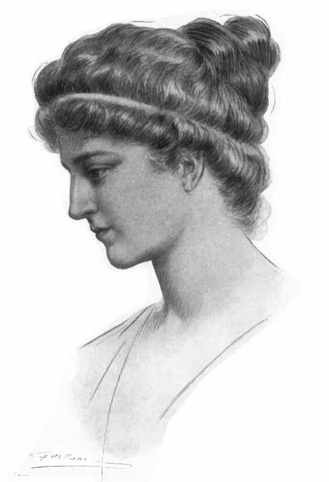
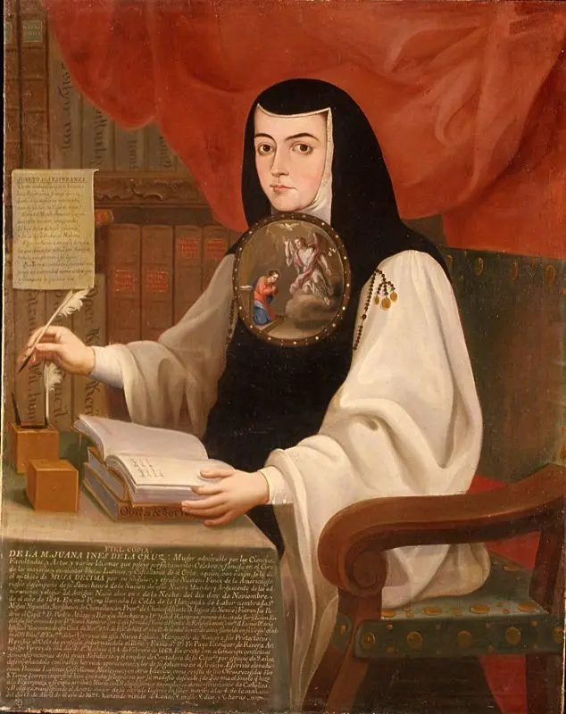
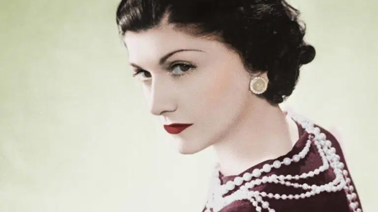

Considerada como la primera mujer científica de la historia, era hija del matemático y filósofo Teón de Alejandría, del que heredó el gusto por la vida intelectual. Él trabajó en el Museo, institución que fue fundada por Tolomeo, y en la que ella se educó. Allí también desarrolló su labor divulgativa y de enseñanza cuando se convirtió en su directora. Pero su erudición le valió la enemistad de los cristianos, religión que se instauró en ese momento en el Imperio Romano, por lo que fue víctima de un linchamiento bajo la creencia de que embrujaba a todos los alejandrinos que escuchaban sus lecciones.
Esta religiosa mexicana destacó por apoyar la enseñanza tanto para hombres como para mujeres, porque consideraba que si no se entendían las ciencias de la tierra, tampoco se podía comprender el plano espiritual. El escritor Octavio Paz encabeza una larga lista de estudiosos que consideran que su obra influyó de manera positiva en el cambio del papel de la mujer en la sociedad.
Liberó a la mujer a través de la moda, mezclando prendas de ropa consideradas en ese entonces como masculinas con el atuendo femenino, creando los primeros pantalones para mujer. Además, popularizó el corte de pelo ‘garçon’ acabando con el estilo de melena larga y creó el traje sastre para las trabajadoras e independientes. Por otro lado, fue la primera mujer empresaria conocida de la historia: en 1910, abrió un taller donde bordaba su colección de ropa.
